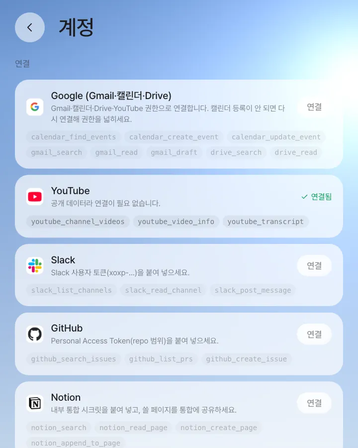
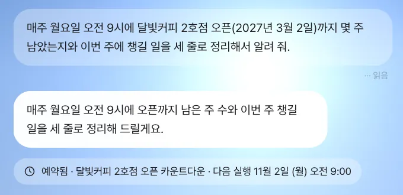
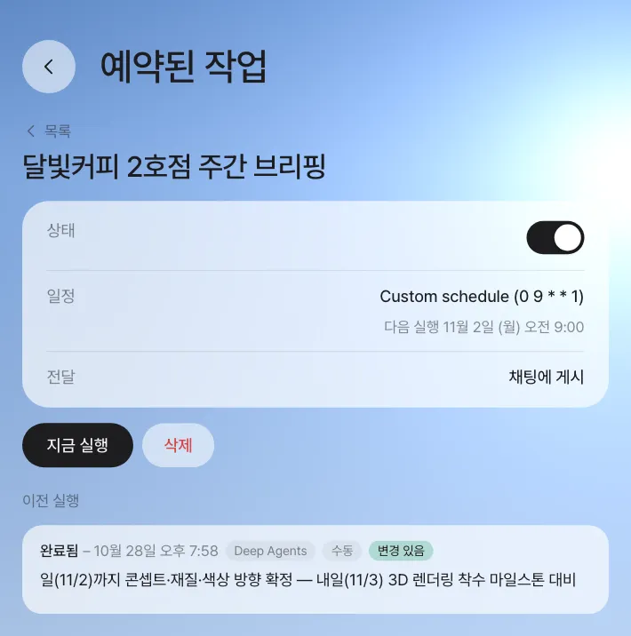
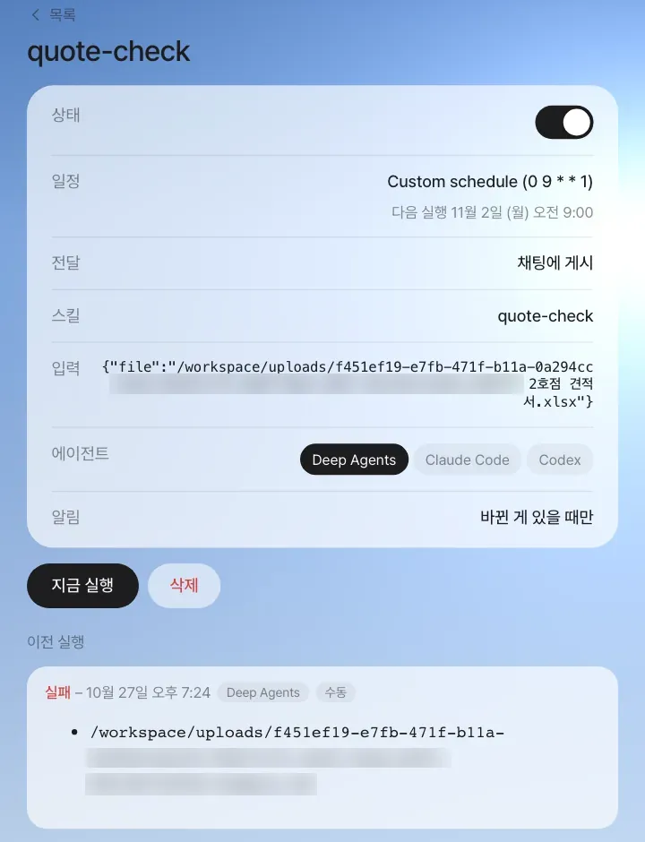

비서가 쓸 수 있는 외부 서비스(Google·YouTube·Slack·GitHub·Notion)를 연결하고, “매주 월요일 9시에 …”처럼 말로 정해진 시각에 돌아가는 작업을 만듭니다. 예약 작업은 지난번과 달라진 것이 있을 때만 채팅에 알립니다. 스킬로 만든 예약(미션)은 지금 실행·일시정지·실행 기록·실행 에이전트 선택까지 관리합니다.
10장에서 견적서 점검 방법을 quote-check 스킬로 저장했습니다. 스킬은 부를 때만 돕니다. 이 장에서는 먼저 비서가 쓸 수 있는 바깥 서비스를 연결하고, 그다음 일을 정해진 시각에 저절로 돌게 합니다.
연결 — 비서가 쓸 수 있는 바깥 서비스#
설정(오른쪽 위 내 이름 동그라미) › 「계정」의 연결에 다섯 가지가 있습니다. 카드마다 비서가 쓸 수 있게 되는 도구가 적혀 있습니다.

| 서비스 | 연결 방법 | 쓸 수 있는 일(도구) |
|---|---|---|
| YouTube | 필요 없음 — 공개 데이터 | 채널의 최근 영상, 영상 정보, 자막 |
| Google (Gmail·캘린더·Drive) | 「연결」 → Google 로그인 동의. 관리자가 서버에 Google 로그인 설정을 해 둬야 함(25장) | 메일 찾기·읽기·초안, 일정 찾기·만들기·고치기, Drive 찾기·읽기 |
| Slack | 사용자 토큰(xoxp-…)을 붙여 넣기 |
채널 목록, 채널 읽기, 메시지 보내기 |
| GitHub | Personal Access Token(repo 범위) 붙여 넣기 | 이슈 찾기, PR 목록, 이슈 만들기 |
| Notion | 내부 통합 시크릿을 붙여 넣고, 쓸 페이지를 그 통합에 공유 | 찾기, 페이지 읽기·만들기·덧붙이기 |
토큰은 보관함에
붙여 넣은 토큰은 그 사람의 보관함에 암호화되어 저장되고(6장), 화면이나 비서(AI 모델)에게 값이 보이지 않습니다. 비서가 도구를 부르면 서버가 부른 사람의 토큰을 꺼내 대신 호출합니다. 그래서 같은 질문도 사람마다 자기 계정의 결과를 받습니다. 연결하지 않은 서비스의 도구를 비서가 부르면 “연결이 필요하다”는 답이 옵니다.
이 장은 개인 계정 연결이 필요 없는 예로 진행합니다. Google·Slack 연결을 쓰는 예(유튜브 새 영상의 일정을 캘린더에 넣기, 슬랙 주간 요약)는 연동·스킬·미션 영상에 있습니다.
따라 하기 1 — 말로 예약하기#
달빛커피 2호점 오픈까지 매주 남은 기간과 할 일을 챙기고 싶습니다. 채팅에 적습니다.
매주 월요일 오전 9시에 달빛커피 2호점 오픈(2027년 3월 2일)까지 몇 주 남았는지와 이번 주에 챙길 일을 세 줄로 정리해서 알려 줘.
“매일·매주·마다·정기” 같은 말이 있으면 비서는 바로 하지 않고 예약으로 받아들입니다. 답 밑에 예약 칩이 붙습니다.

확인할 것: 칩의 작업 이름과 다음 실행 시각. 비서는 매번 실행할 지시문을 스스로 완성해서 저장합니다(실습: “…남은 일수를 7로 나눈 값을 올림으로 주 수로 환산…”).
「설정 › 예약된 작업」에서 목록과 상세를 봅니다.

| 항목 | 뜻 |
|---|---|
| 상태 | 스위치로 일시정지·다시 시작. 일시정지 중엔 정해진 시각에 돌지 않습니다 |
| 일정 | 한국 시간 기준의 주기(분 시 일 월 요일). 0 9 * * 1 = 매주 월요일 9:00 |
| 다음 실행 | 실제로 다음에 돌 시각 |
| 전달 | 결과가 올라갈 곳(이 대화) |
| 「지금 실행」 | 시각을 기다리지 않고 한 번 돌립니다(기록에 「수동」 표시) |
| 「삭제」 | 예약을 지웁니다 |
| 이전 실행 | 실행마다 상태(완료됨·실패)·시각·요약. 채팅에 결과를 올린 회차는 「변경 있음」, 조용히 지나간 회차는 「변동 없음」 |
지난번과 같으면 조용히#
예약 작업은 실행할 때마다 “직전 실행에서 공유한 것과 달라진 게 없으면 ‘변동 없음’만 답하라”는 조건과 함께 돌고, 답이 “변동 없음”이면 채팅에 아무것도 남기지 않습니다(구분선도 없음). 앞 실행이 아직 도는 중이면 그 회차는 건너뜁니다. 매일 같은 내용이 쌓여 정작 중요한 알림을 놓치는 일을 막기 위해서입니다. 조용히 지나간 회차도 상세 화면의 「이전 실행」에는 「변동 없음」으로 남습니다.
실패는 조용히 지나가지 않습니다
조용해지는 것은 제대로 돌았는데 바뀐 것이 없을 때뿐입니다. 실행이 실패하면 채팅에 “예약 실행이 실패했어요: …” 한 줄이 남고, 홈에 「예약 실행 실패」 카드가 올라오며, 「이전 실행」에도 「실패」로 기록됩니다. 서버나 데이터베이스가 잠시 응답하지 않아 실행을 시작조차 못 했으면 몇 분 뒤 저절로 다시 돌립니다.
따라 하기 2 — 스킬을 예약하기 (미션)#
10장에서 만든 스킬을 정해진 시각에 돌리면 미션이 됩니다. 미션은 일반 예약보다 관리할 것이 많습니다.
「설정 › 스킬」에서 quote-check를 열면 아래에 주기 버튼(매일 아침 8시 · 하루 두 번 · 평일 장중 매시 · 매주 월 9시)이 있습니다. 「매주 월 9시」를 고르고 「입력값(JSON)」 칸에 점검할 견적서를 적은 뒤(칸 안의 예시처럼 {"이름": "값"} 모양으로 적습니다) 「매주 월 9시 예약 만들기」를 누릅니다. 스킬 초안 카드에서 저장할 때 주기를 함께 골라도 됩니다.
「설정 › 예약된 작업」에서 미션을 열면 일반 예약보다 항목이 많습니다. 「지금 실행」을 눌러 바로 돌려 봅니다.

미션은 스킬이 답의 마지막 줄에 아래 같은 결과 줄을 남기면 그것으로 “바뀐 것이 있는지”를 판단합니다. 미션을 돌릴 때마다 비서에게 이 줄을 남기라고 함께 알려 줍니다. 결과 줄이 없어도 정상으로 끝난 실행은 「완료됨」으로 기록되지만, 바뀐 것이 있었는지 알 수 없으므로 「변동 여부 모름」이 붙고 알림은 보냅니다. 오류로 끝났거나 아무 답이 없을 때만 「실패」입니다. 위 사진은 이 규칙이 생기기 전의 수동 실행이라, 점검을 마쳤는데도 결과 줄이 없어 「실패」로 남아 있습니다.
MISSION_RESULT: {"changed": true, "summary": "확인 필요 2건 — 유효기간 문구 오타, 저장값이 옛 합계"}
| 결과 줄의 항목 | 뜻 |
|---|---|
changed |
알릴 만한 새 것이 있으면 true. 알림이 “바뀐 게 있을 때만”이면 이것이 true일 때만 채팅에 올라옵니다 |
summary |
실행 기록과 채팅에 남을 한두 문장 |
seen_add |
(선택) 이번에 처리한 항목 id. 다음 실행에 seen으로 넘어와 같은 것을 두 번 처리하지 않습니다 |
예약할 스킬은 만들 때부터
스킬 초안 카드에서 저장할 때 주기를 함께 고르면, SKILL.md에 결과 줄이 없을 경우 “예약 실행 결과” 단계가 저절로 더해집니다. 이미 저장한 스킬이라면 10장의 변형으로 그 절차를 더하거나, 만들 때 예약 미션으로 돌릴 거야. 끝에 MISSION_RESULT 한 줄(changed, summary)을 꼭 남기게 해 줘라고 덧붙이세요. 기본으로 들어 있는 youtube-schedule-to-calendar 스킬이 이 형식을 따르는 예입니다(유튜브 채널의 새 영상에서 일정을 찾아 Google 캘린더에 넣음 — Google 연결 필요).
상태 스위치·「지금 실행」·「이전 실행」은 일반 예약과 같습니다. 미션에는 다음이 더 있습니다.
| 미션에만 있는 것 | 하는 일 |
|---|---|
| 스킬·입력 | 돌릴 스킬과 넘길 입력값 |
| 에이전트 | Deep Agents · Claude Code · Codex 중 누가 실행할지 |
| 알림 | 바뀐 게 있을 때만 / 매번 / 보내지 않음 |
| 「변동 여부 모름」 | 이전 실행에서, 결과 줄 없이 정상으로 끝난 회차에 붙습니다 |
미션 결과는 설정한 사람에게만 갑니다. 스킬은 한 사람의 일을 한 에이전트가 하는 것이기 때문입니다. 여러 사람이 이어서 해야 하는 일(검토·승인)은 미션이 아니라 프로세스를 예약합니다. 매주 월요일 9시에 SNS 트렌드 대응 프로세스를 시작해 줘처럼 말하면 실행할 때마다 프로세스가 새로 시작되고, 단계마다 담당자에게 넘어갑니다(프로세스는 17장에서 만듭니다).
다음 장으로#
예약 미션은 결과를 나 한 사람에게 알려 줍니다. 다음 장에서는 견적 현황처럼 팀이 함께 보고 고치는 작은 표를 말 한마디로 만드는 패널 앱을 봅니다(12장).
확인 문제
- Slack 채널을 요약하는 예약을 만들었는데 첫 실행 결과가 “연결이 필요해요”였습니다. 무엇을 해야 할까요?
- 매일 오후 4시에 견적 현황판(다음 장에서 만드는 패널 앱)을 보는 예약을 걸었습니다. 수요일에는 아무 견적도 바뀌지 않았습니다. 채팅에는 무엇이 남을까요?
- 박서연에게도 같은 결과를 보내고 싶습니다. 미션의 알림 범위를 넓히는 것이 맞을까요?
답
- 「설정 › 계정 › 연결」에서 Slack 카드의 「연결」을 눌러 자기 사용자 토큰을 넣습니다. 예약은 설정한 사람의 연결로 실행됩니다.
- 아무것도 남지 않습니다. 달라진 것이 없으면 비서가 “변동 없음”으로 답하고, 그 회차는 채팅에 구분선조차 남기지 않습니다.
- 아닙니다. 미션 결과는 설정한 사람에게만 갑니다. 박서연에게도 알려야 하는 일이라면 채팅으로 결과를 공유하거나(@멘션, 14장), 여러 사람이 이어서 하는 일이라면 프로세스로 만들어 예약합니다.